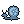

Quartz Snail
Luminous Cave
Steady life · Generous yield · Brisa resonance
Born by night → Escarcha · morning → Brisa · midday → Fulgor · evening → Ascua
Each generation is slightly larger than the last. The shell it leaves becomes the base for the next. At this rate, in enough generations, the shell would be the largest thing in the cave. This is presumably fine.
On its death: “The shell it left is already being filled with sediment from above.”
← The Bestiary of Echoes of the Garden